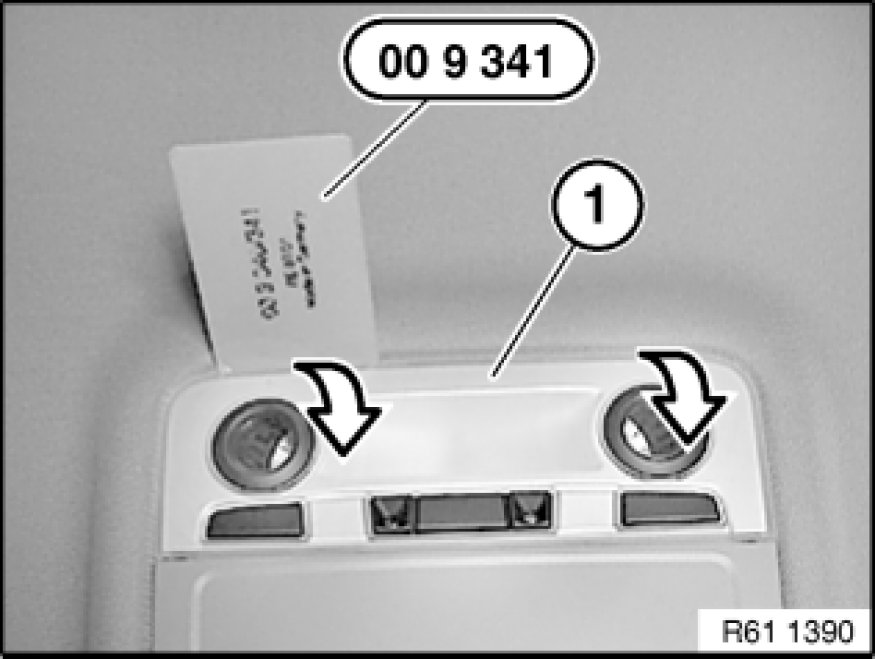
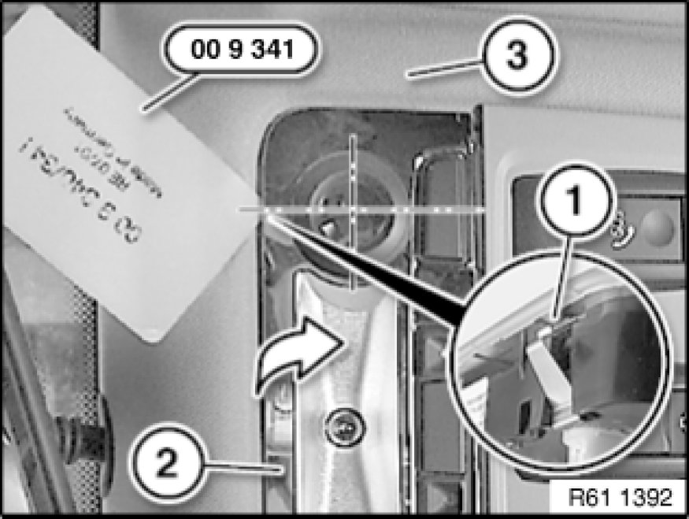
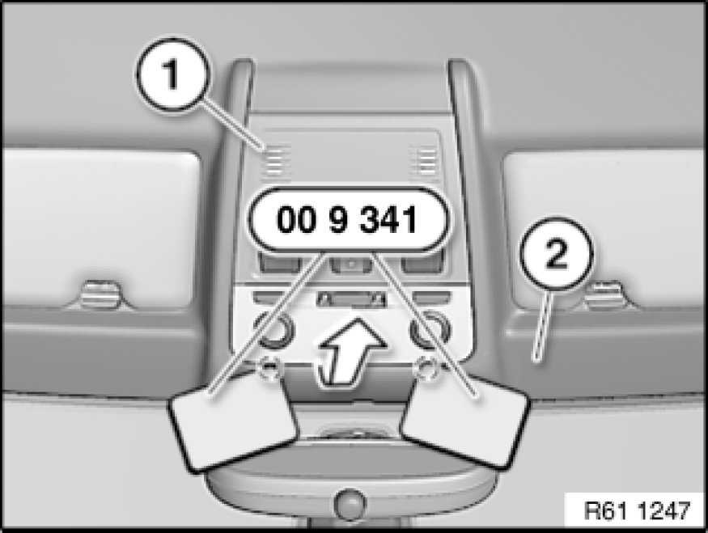
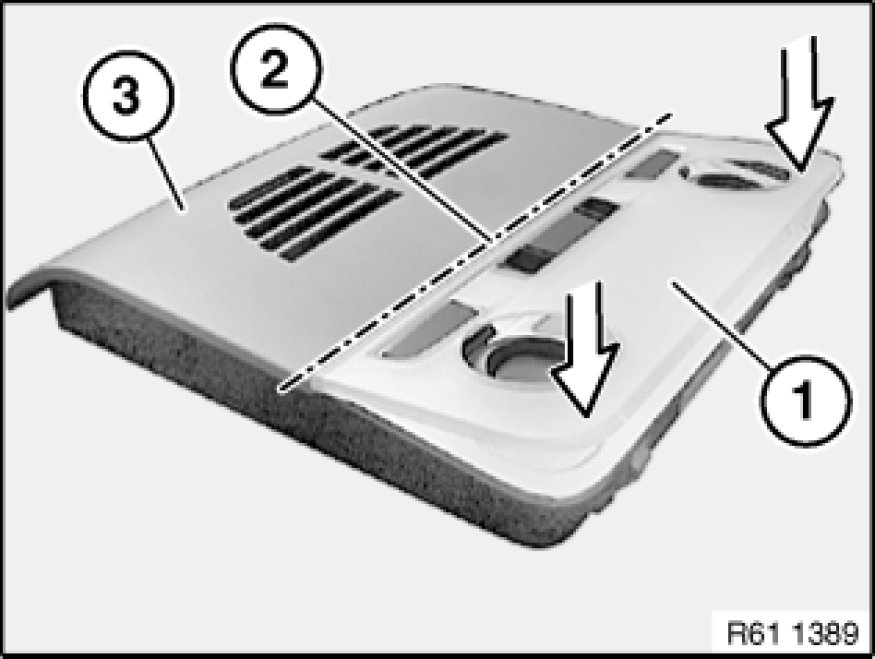

61 31 043 Removing and Installing/Replacing Roof Switch Centre
61 31 043 - Removing and installing or replacing roof switch centre

Special tools required:
- 00 9 341

Important!
Follow instructions for handling light bulbs (interior lights) Service and Repair.

Important!
Read and comply with notes on protection against electrostatic damage (ESD protection) 61 35 ... Notes on ESD Protection (Electro Static Discharge).

Important!
Reflector on ceiling light must not be damaged.
Carefully unclip trim of ceiling light (1) with special tool 00 9 341 in direction of arrow from ceiling light and remove.

Important!
Reflector (2) and roofliner (3) must not be damaged.
Retaining clips (1) are located on centreline of both reading lights.
Carefully unlock retaining clips (1) with special tool 00 9 341.

Lever roof switch centre (1) with special tool 00 9 341 in direction of arrow out of roofliner (2).
Disconnect plug connections underneath and remove roof switch centre (1).
Note:
Disconnecting the plug connection for the hands-free microphone or emergency SOS call button results in fault memory entries in the telephone control unit (limitation in the emergency SOS call system).
After fitting, read out fault memory and if necessary delete entries.

Installation Note:
Assembling roof switch centre (3) prior to installation:
1. Feed in ceiling light trim (1) at line (2)
2. Press ceiling light trim (1) in direction of arrow onto ceiling light
Make sure ceiling light trim (1) is correctly engaged on ceiling light.

Replacement:
- Carry out vehicle programming/coding Programming and Relearning
- Initialise slide/tilt sunroof Testing and Inspection.
- If necessary, remove bulbs Service and Repair.